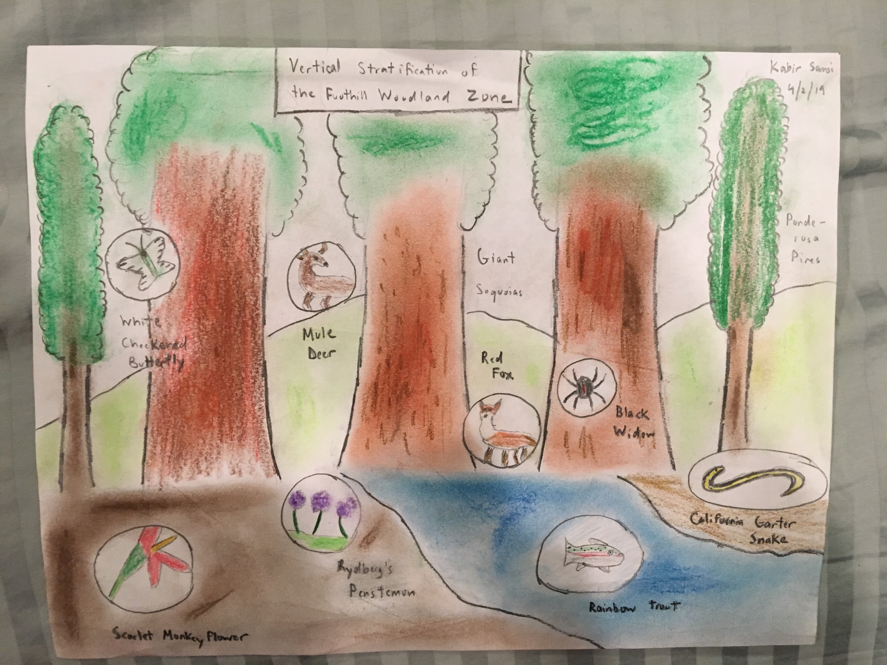

Vertical Stratification

Mediums: Chalk Pastel, Color Pencils, Printer Paper
Amongst our biome assignments was the assignment where we had to either do a topographic map or a vertical stratification of Yosemite Valley. I chose a Vertical Stratification because it would take less time, and I also felt that I would be able to model the flora and fauna of the valley better this way. I created the background and trees using pastels, and throughout the scene, drew various plant and animal species at their primary habitat. All of these were from my flora and fauna science assignment. I found this assignment to be fun and not as complicated as I had originally thought.